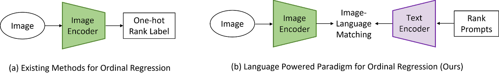
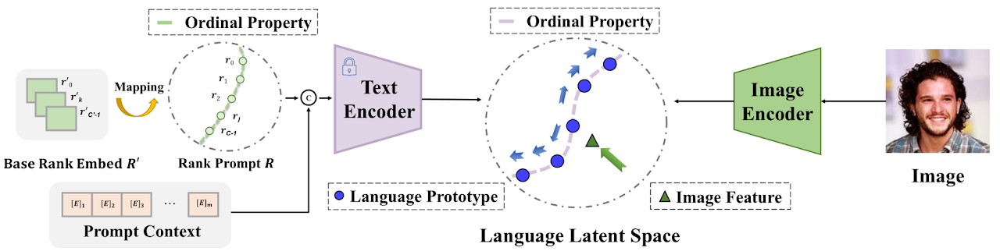
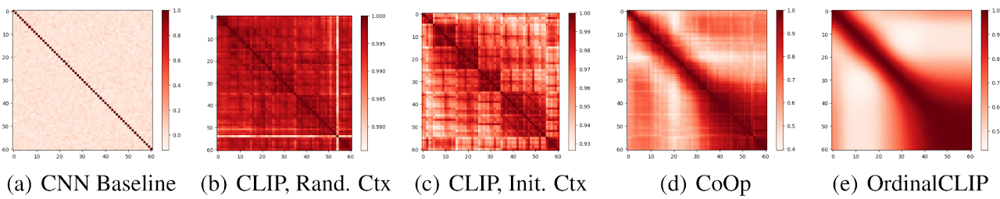
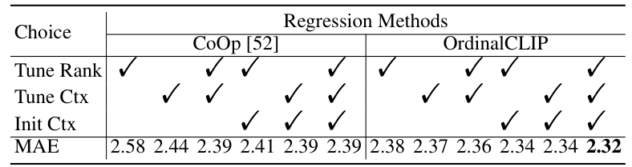

OrdinalCLIP: Learning Rank Prompts for Language-Guided Ordinal Regression

Figure 1: The key idea of our paradigm. Existing methods usually learn the rank concepts from the training data. Instead, we leverage the language priors to learn the rank concepts. We treat each rank category as text and extract the language prototypes with a well-learned text encoder. We align image features into the well-learned language latent space. We further propose differentiable rank prompts to better exploit the ordinality in the language priors from the fixed text encoder.
This paper presents a language-powered paradigm for ordinal regression. Existing methods usually treat each rank as a category and employ a set of weights to learn these concepts. These methods are easy to overfit and usually attain unsatisfactory performance as the learned concepts are mainly derived from the training set. Recent large pre-trained vision-language models like CLIP have shown impressive performance on various visual tasks. In this paper, we propose to learn the rank concepts from the rich semantic CLIP latent space. Specifically, we reformulate this task as an image-language matching problem with a contrastive objective, which regards labels as text and obtains a language prototype from a text encoder for each rank. While prompt engineering for CLIP is extremely time-consuming, we propose OrdinalCLIP, a differentiable prompting method for adapting CLIP for ordinal regression. OrdinalCLIP consists of learnable context tokens and learnable rank embeddings; The learnable rank embeddings are constructed by explicitly modeling numerical continuity, resulting in well-ordered, compact language prototypes in the CLIP space. Once learned, we can only save the language prototypes and discard the huge language model, resulting in zero additional computational overhead compared with the linear head counterpart. Experimental results show that our paradigm achieves competitive performance in general ordinal regression tasks, and gains improvements in few-shot and distribution shift settings for age estimation.
OrdinalCLIP consists of three components: (1) learnable rank embeddings module; (2) Rank embeddings and context embeddings joint encoder; (3) Language prototypes - images matching module.

Figure 2: The framework of OrdinalCLIP. We regard rank categories as text and employ a language model to leverage the language priors. For each rank, we concatenate its word embedding and learnable prompt context. Then they are sent to a language model to extract the corresponding language prototype. To preserve the ordinal property of language prototypes, we explicitly construct the ordinal rank embeddings that are interpolated from several base rank embeddings. We found the ordinality of the rank embeddings can be implicitly propagated toward the language prototypes.
Figure 3: The similarity matrices of language prototypes for different rank prompts. The redder, the more similar the pair of language prototypes. The percentages of prototype pairs that obey the ordinality are: 49.13%, 49.71%, 54.84%, 59.92%, and 65.94%, respectively.

Table 1: Ablation experiments on the MORPH II dataset.

1. Compared to previous paradigms, the new paradigm based on language-image matching learns a more ordered and very compact feature space, and achieves better performance. This compact feature space is still highly discriminative, which demonstrates the rich semantic information and structure of the feature space of large-scale pre-trained visual-linguistic models (e.g. CLIP). The new paradigm achieves better performance within the distribution shift and few-shot settings.
2. As the ordinality of the language prototype increases, the model performance can be improved. Compared to previous algorithms, the interpolation-based rank prompt embeddings constructed by OrdinalCLIP significantly improves the orderliness of the embedding. In addition, the model also achieves better performance with fewer samples and distribution bias settings.
3. The introduction of learnable contextual embeddings beyond modelling ordinal relations can further improve the performance of the model compared to manual design of contextual prompts.
@article{Li2022OrdinalCLIP,
title={OrdinalCLIP: Learning Rank Prompts for Language-Guided Ordinal Regression},
author={Wanhua Li and Xiaoke Huang and Zheng Zhu and Yansong Tang and Xiu Li and Jiwen Lu and Jie Zhou},
journal={ArXiv},
year={2022},
volume={abs/2206.02338}
}